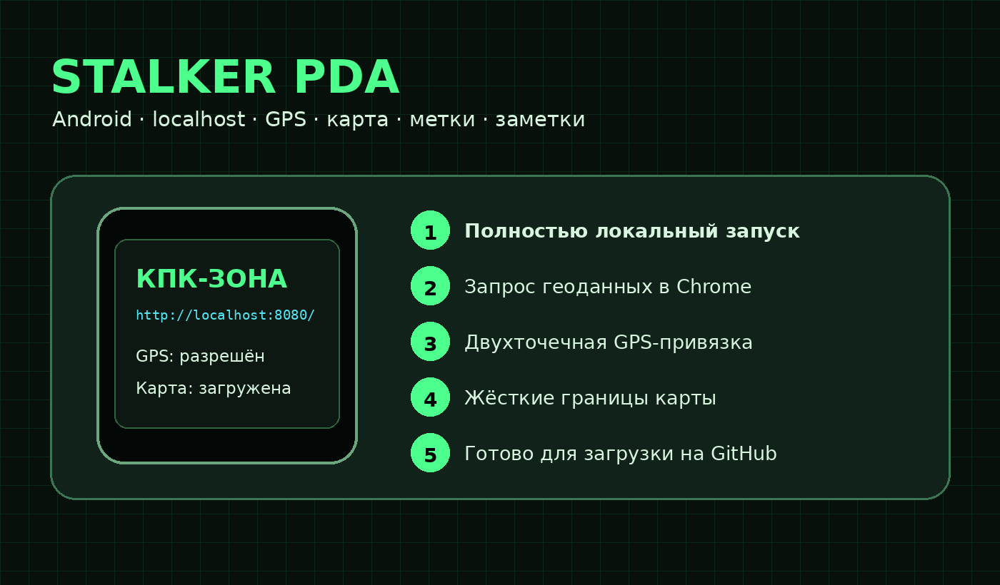
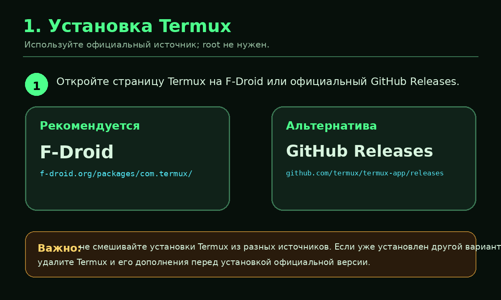
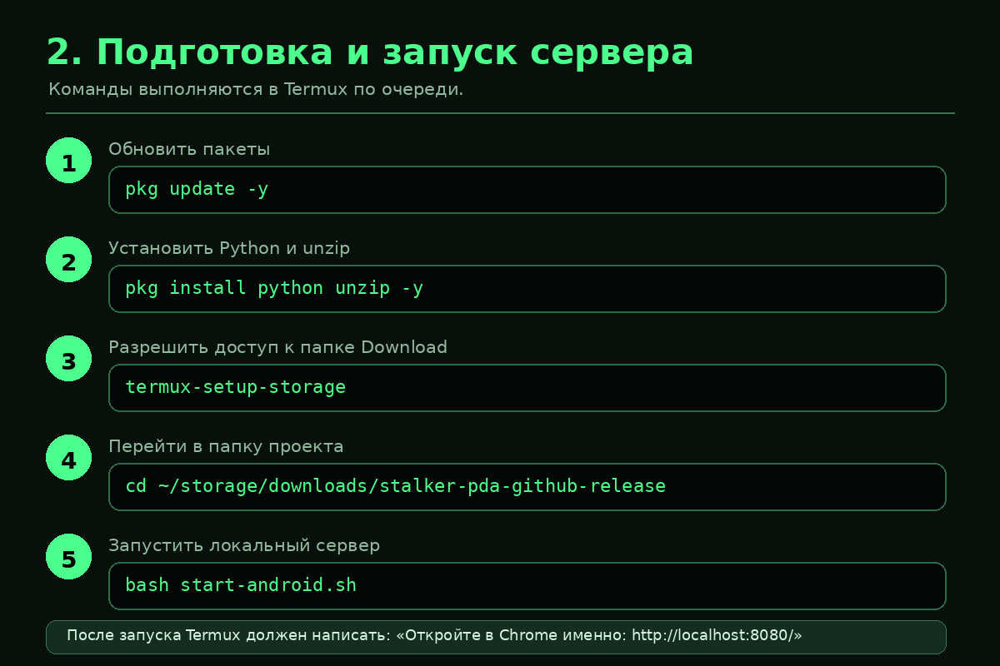
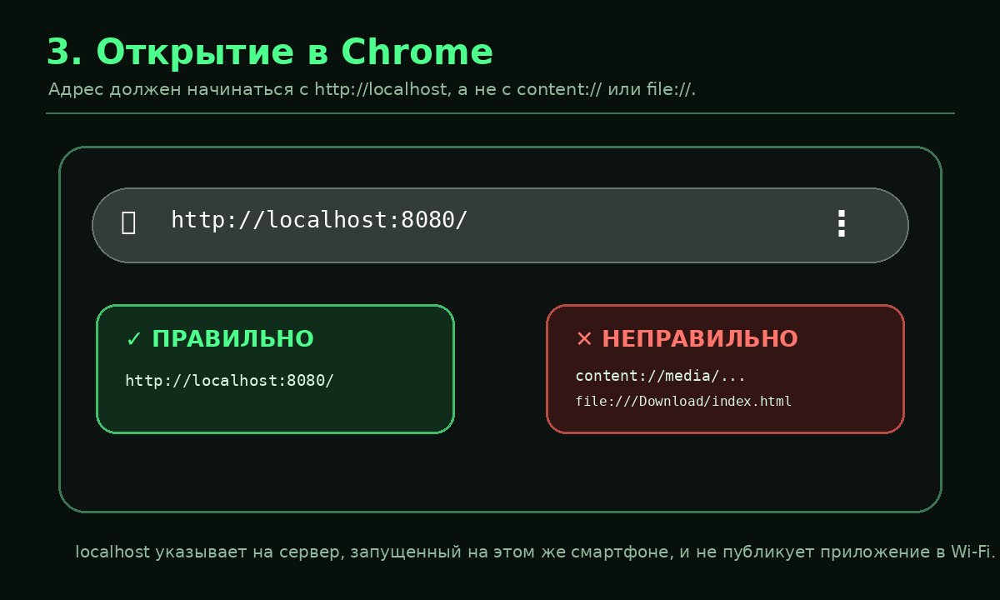
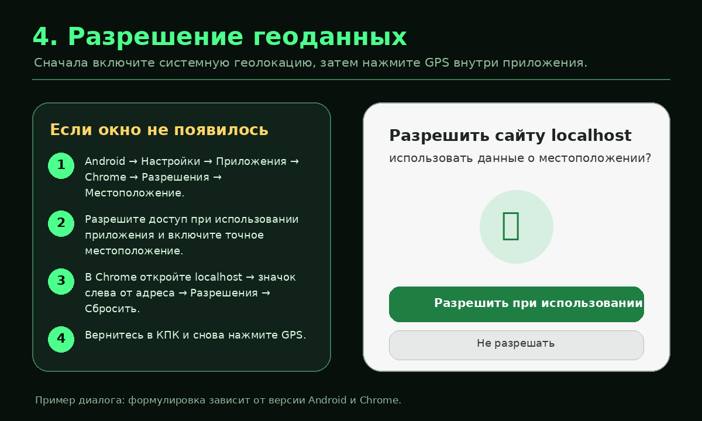
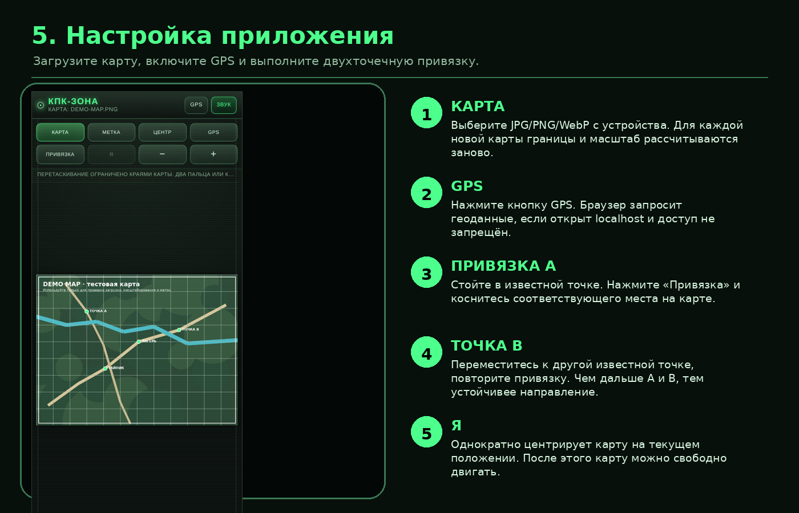
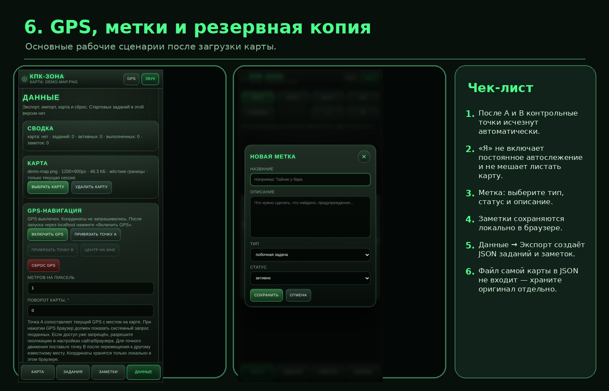

Запуск STALKER PDA на Android
Пошаговая инструкция: установка Termux, локальный веб‑сервер, открытие через localhost, разрешение GPS, загрузка карты, калибровка A/B и резервное копирование.
Главное правило: открывайте приложение именно по адресу http://localhost:8080/. Не открывайте index.html через файловый менеджер.
1. Установите Termux
Используйте официальный выпуск из F-Droid или GitHub Releases. Root-доступ не нужен.

- F-Droid:
f-droid.org/packages/com.termux/ - GitHub:
github.com/termux/termux-app/releases
2. Подготовьте файлы и запустите сервер
Распакуйте архив в папку Download. В Termux выполните:
pkg update -y pkg install python unzip -y termux-setup-storage
После системного запроса разрешите доступ к файлам. Затем:
cd ~/storage/downloads/stalker-pda-android-github-release bash start-android.sh
Альтернативный запуск:
python server.py --port 8080

Не закрывайте Termux. Для остановки сервера вернитесь в него и нажмите Ctrl+C.
3. Откройте приложение в Chrome
http://localhost:8080/

Если использован порт 8081, адрес будет http://localhost:8081/.
4. Разрешите геоданные

Если запрос не появился, нажмите значок слева от адреса localhost, откройте разрешения сайта, сбросьте их, обновите страницу и снова нажмите GPS.
5. Загрузите карту и выполните привязку

- Карта: выберите JPG, PNG или WebP. В архиве есть
examples/demo-map.png. - GPS: дождитесь текущих координат и точности.
- Точка A: находясь в узнаваемом месте, нажмите «Привязка» и укажите его на карте.
- Точка B: переместитесь в другое узнаваемое место и повторите привязку.
- Я: один раз центрирует карту на текущем положении. Затем ручное листание остаётся свободным.
После калибровки A/B служебные точки исчезнут автоматически. При загрузке новой карты её размеры, минимальный масштаб и жёсткие границы перемещения рассчитываются заново.
6. Метки, заметки и резервная копия

- Добавляйте метки через кнопку «Метка».
- Ведите журнал на вкладке «Заметки».
- На вкладке «Данные» выполняйте экспорт JSON.
- JSON не содержит сам файл карты — храните оригинал отдельно.
7. Быстрая диагностика
Страница не открывается
Проверьте, что Termux всё ещё запущен и показывает сервер. При занятом порте:
bash start-android.sh 8081
GPS запрещён
Проверьте localhost, системную геолокацию Android, разрешение Chrome и разрешение сайта localhost.
Android закрывает сервер
Для Termux выберите режим батареи «Без ограничений» или отключите оптимизацию, если такая настройка доступна.
Полная таблица проблем находится в docs/TROUBLESHOOTING.md.